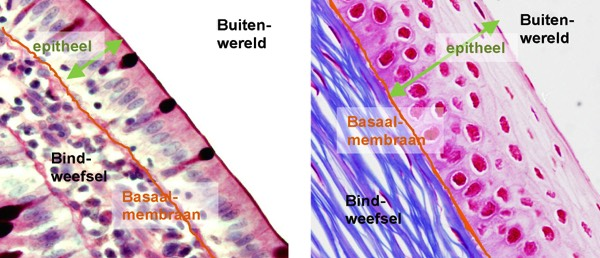

Zoek het bedekkende epitheel:
- Bedekkend epitheel staat steeds in contact met ‘de buitenwereld’, dit betekent met het lichaamsoppervlak of met het lumen van een orgaan of buisje: Zoek de buitenwereld.
- Tussen de cellen van het epitheel bevindt zich extreem weinig intercellulaire matrix, waardoor het een dicht opeengepakte laag van cellen is. Omdat nagenoeg elke cel een kern heeft zoek je een zone waar dicht opeengepakte kernen (dus cellen) te zien zijn.
- Epitheel rust op een basaalmembraan, waardoor het meestal opvallend begrensd is naar het onderliggende bindweefsel toe. Bij bindweefsel vind je relatief veel intercellulaire matrix terug, waarin de bindweefselcellen meer verspreid liggen. Zoek het onderliggende bindweefsel en bepaal de ligging van de basaalmembraan. De ‘basale’ kant van de epitheelcellen wijst naar de basaalmembraan.

Vordering zelfstudie bedekkende epithelen: